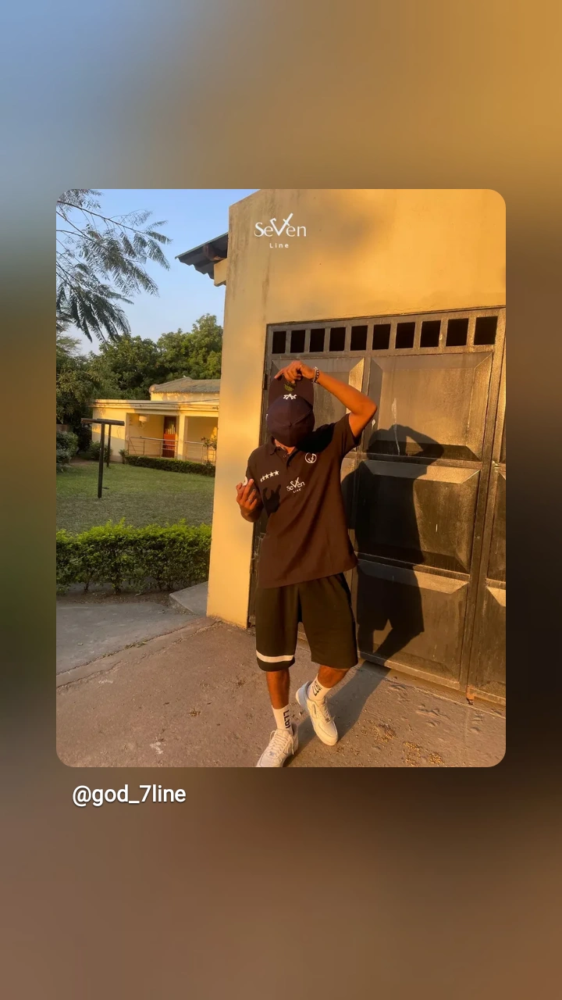

01 / MORADA
Em frente ao
Millennium BIM.
Vila da Manhiça, Moçambique. Procura a identidade God Seven Line.
ENCONTRA-NOS / MANHIÇA
Vê as peças de perto, conversa connosco e começa a tua próxima história.
Pedir indicações ↗VILA DA
MANHIÇA
01 / MORADA
Vila da Manhiça, Moçambique. Procura a identidade God Seven Line.
02 / HORÁRIO
Segunda — Sexta08h00 — 17h00
Sábado08h00 — 17h00
DomingoEncerrado

ANTES DE VIRES
Envia uma mensagem para confirmar disponibilidade de peças, tamanhos e atendimento.
Falar connosco ↗FAZ PARTE DA NOSSA HISTÓRIA